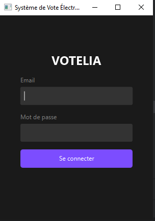
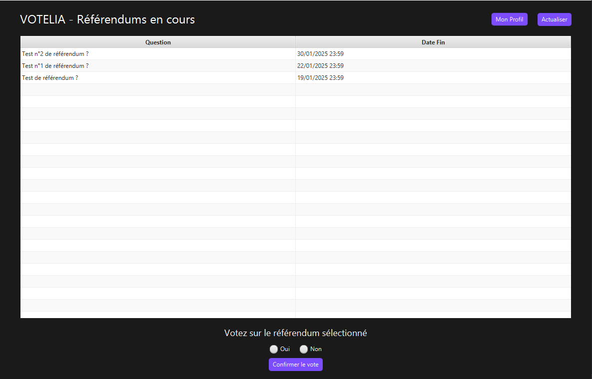

Description du projet
Votelia est une plateforme de gestion des votes électroniques destinée à simplifier et sécuriser les processus électoraux.
Elle permet l'organisation de votes en ligne de manière transparente, rapide, et avec une grande fiabilité.
Contexte : Les processus électoraux traditionnels sont souvent coûteux et sujets à des délais importants.
Avec la digitalisation croissante, une plateforme comme Votelia répond à un besoin de modernisation des votes,
tout en garantissant leur intégrité et leur confidentialité.
Objectifs :
- Fournir un système sécurisé et accessible pour des votes électroniques fiables.
- Assurer la confidentialité des choix des électeurs et l'intégrité des résultats.
- Proposer une interface utilisateur intuitive pour faciliter la participation électorale.
Résultats obtenus : Votelia permet de gérer facilement des réferendums électroniques.
Le système garantit la sécurité des données grâce à des technologies modernes de chiffrement et des protocoles sécurisés.
Compétences acquises
- Gestion de la sécurité des données : Implémentation de systèmes de chiffrement avancés (ex : SSL/TLS) pour sécuriser les échanges de données sensibles.
- Développement d’authentification sécurisée : Intégration d’une authentification multi-facteurs et gestion des sessions avec journalisation pour prévenir les fraudes.
- Conception responsive : Création d’interfaces accessibles et adaptées à tous les types d’appareils (mobiles, tablettes, ordinateurs).
- Optimisation des performances : Hébergement sur des serveurs évolutifs pour gérer des charges élevées et sauvegardes régulières des données critiques.
- Amélioration de l’expérience utilisateur : Design intuitif et simplifié pour encourager la participation et rendre la navigation fluide.
- Gestion de projets techniques : Développement d’un système complet et fiable, de la collecte des besoins à la mise en production.
- Sensibilisation à la confidentialité : Pratiques avancées pour garantir l’intégrité des résultats et la confidentialité des électeurs.
- Collaboration interdisciplinaire : Travail en équipe pour intégrer des fonctionnalités critiques tout en respectant des délais courts.
Défis techniques
1. Sécurisation des données sensibles :
Défi : Protéger les données des électeurs et garantir que les votes restent confidentiels.
Solution :
- Implémentation d’un système de chiffrement avancé pour sécuriser les données des votes et des électeurs.
2. Prévention des fraudes :
Défi : Empêcher les votes multiples ou non autorisés.
Solution :
- Authentification sécurisée pour vérifier l’identité des électeurs.
3. Accessibilité et fiabilité :
Défi : Créer une plateforme facile à utiliser et résiliente en cas de trafic élevé.
Solution :
- Design responsive pour garantir l’accessibilité sur n'importe quelles machines.
Impact
1. Pour les utilisateurs :
- Participation simplifiée grâce à une plateforme accessible 24/7.
- Confiance accrue dans le processus grâce à des mesures de sécurité avancées.
2. Pour les organisateurs :
- Réduction des coûts liés aux infrastructures physiques des votes.
- Gestion automatisée des résultats, éliminant les erreurs humaines.
3. Pour les processus électoraux :
- Augmentation du taux de participation grâce à la facilité d’accès.